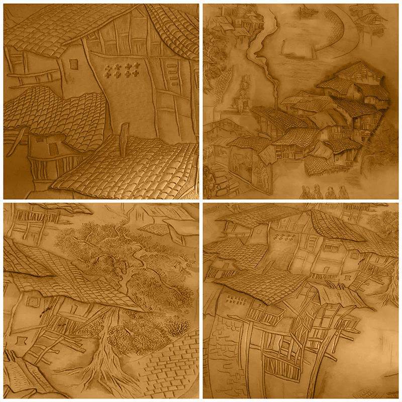

Titre :Maison sur pilotis
Type d’œuvre : Sculpture sur cuir
Dimension : 150*150 (cm)
Matériaux: cuir de vache, cordes, cadre en bois
Résumé: La Maison sur pilotis est une architecture typique et ancienne de ma ville d’origine dont je garde les souvenirs dans ma tête. Certains paysages existent encore, pourtant certains sont déjà disparus. J’aimélangé les paysages qui existent encore etceux qui sont dans ma mémoire pour avoir créer ma propreville de Chongqing. La combinaison de la réalité et de la mémoire même de l’illusion compose l’imageréelle.

